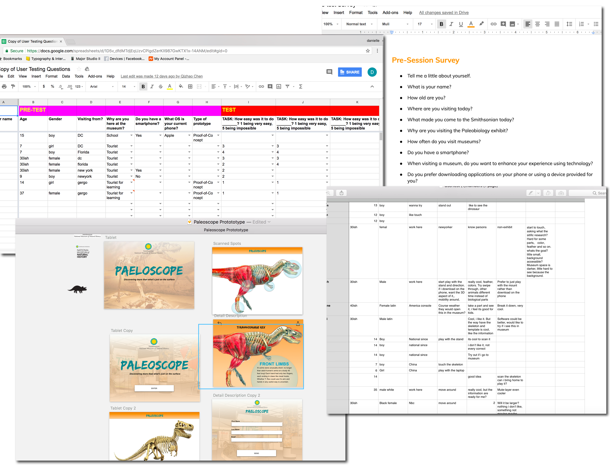
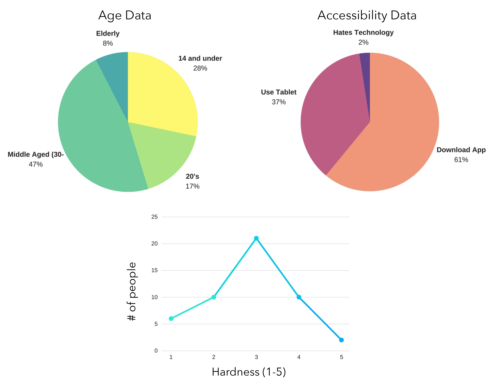

Brainstorming & Research
First, we interviewed Audrey Chang, the Chief of Exhibit Business and Partnership from the Smithsonian and Mike Lawrence, the Director of Exhibits, in order to find the problem with the current exhibit. They wanted to bridge the gap between technology and these prehistoric creatures. They tried apps and different tablets but nothing was engaging museum goers. Our team immediately started brainstorming and developed the idea of scanning skeletons. We created a storyboard to demonstrate our concept. We presented this idea to the Smithsonian. Some feedback we received was to add filters that show different perspective of the exterior of these dinosaurs throughout time and art.


Rapid Prototyping & Testing
After synthesizing all our feedback and research, we rapidly designed a prototype. We mocked up the onboarding flow and the main flow in sketch in order to show users the concept of the application. We then designed the augmented reality part of the app using Vuforia. In order to see if our idea was easy and needed for this exhibit, we went to Washington, D.C to test in the actual exhibit environment. In order to show our concept without having the actual installation built, we used an ipad and a mic stand for testing.

Overall Findings
We tested over 50 people at the Smithsonian, ranging from the ages of 5 to 65. Overall, we got positive feedback on our application “Paleoscope”. Users found the app very engaging and said they would definitely use it while visiting the exhibit. Some users suggested adding sound, making the type bigger and including filters for different ways to view the dinosaurs (colors, skin types, muscle system). Users also suggested expanding this app and using it throughout other exhibits. Some even suggested having this app continue at home after the museum. Based off of our findings, children were the most interested in our application. They loved seeing something different on the screen then what's in front of them. We are currently working on refining this application and talking to the Smithsonian.